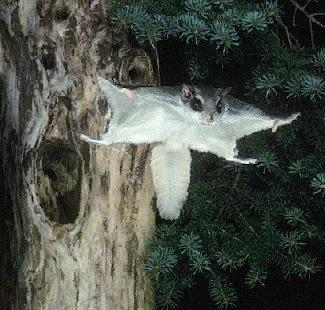

This animal does not, of course, actually fly; it glides. There
are
blanket-like membranes of skin between its wrists and
hindlegs
that give it the ability to glide far distances. The flying
squirrels
have dense, and soft fur. They have long, flattened tails
that
are
used to guide their glides. Notice the large eyes that helps
them
see at night.